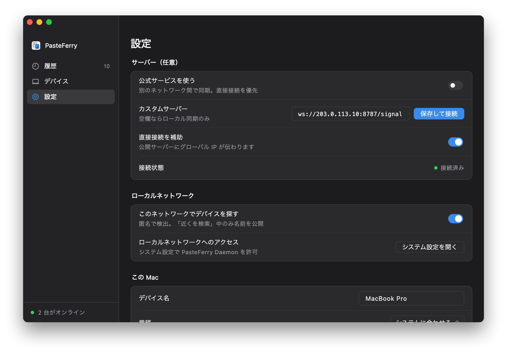

すべてのコンピューターが直接つながる
サーバーはインターネット上にあるので、各コンピューターはどのネットワークからでも直接つながります。コピーした内容はできるかぎり 2 台のあいだを直接流れ、直接つながらないときはサーバーで中継します。その場合も暗号化されたままです。
- シグナリング、TCP 8787。各コンピューターが常に接続し、相手の発見、ペアリング、接続情報の交換に使います。
- 直接接続。別々のネットワークにある 2 台は NAT 穴あけで直接つながります。ほとんどの家庭と会社のネットワークで成功します。
- 中継、UDP 3478 と中継用ポート。直接つながらないときはサーバーが転送します。暗号化されたままで、速度はサーバーの帯域に左右されます。
始める前に
- クラウドサーバー
- Linux（x86_64 または ARM64）。サーバーのメモリは約 15 MB なので最小構成で足ります。root 権限が必要です。
- グローバル IP
- クラウドサーバーに付いているもので構いません。固定（Elastic IP など）が理想です。変わると全部のコンピューターで入れ直しになります。
- ログインの手段
- ssh、またはクラウドのコンソールにある Web ターミナル。
- 中国本土のクラウドサーバー
- ICP 登録のないドメインは使えないので、アプリにはドメインではなく IP を入力します（よくある質問）。
ステップ 1
セキュリティグループでポートを開ける
クラウドのコンソールで、このサーバーのセキュリティグループに次の 3 つのインバウンドルールを追加します。
| プロトコル | ポート範囲 | ソース | 用途 |
|---|---|---|---|
| TCP | 8787 | 0.0.0.0/0 | シグナリング |
| UDP | 3478 | 0.0.0.0/0 | STUN と TURN |
| UDP | 32768-60999 | 0.0.0.0/0 | 中継用ポート |
- 呼び名の違い：事業者によって「ファイアウォール」「ネットワーク ACL」などと呼ばれますが、同じ設定です。
- 中継用ポートは OS が割り当て、範囲はサーバーによって異なります。
cat /proc/sys/net/ipv4/ip_local_port_rangeで確認でき、インストールスクリプトも最後に表示します。 - OS のファイアウォール：ufw や firewalld が有効なら同じポートを開けます。コマンドはスクリプトの最後に表示されます。
ステップ 2
インストールスクリプトを実行
スクリプトにグローバル IP を渡すと、サーバーをインストールし、起動時に立ち上がる systemd サービスを登録して、最後にアプリへ入力するアドレスを表示します。
- ssh でログインします（例：
ssh root@203.0.113.10、あなたのグローバル IP に置き換え）。 - 次の行を順に実行します。最後の行はあなたのグローバル IP に置き換えます：ARM では
amd64をarm64に置き換えます。curl -LO https://github.com/baiyuze/pasteferry/releases/latest/download/pasteferry-server-linux-amd64.tar.gz tar xzf pasteferry-server-linux-amd64.tar.gz cd pasteferry-server-linux-amd64 sudo ./install.sh 203.0.113.10 - 最後に表示される
ws://203.0.113.10:8787/signalがアプリに入力するアドレスです。
- systemd サービスとして登録され、起動時に立ち上がります。設定は
/etc/pasteferry/server.env。 - 更新：新しいバージョンをダウンロードして展開し、もう一度
sudo ./install.shを実行。設定は引き継がれます。 - Docker でも動かせます：サーバーの構築手順（英語・中国語）をご覧ください。
$ sudo ./install.sh 203.0.113.10 ▶ Installing the binary to /usr/local/bin ▶ Writing the systemd unit ▶ Writing /etc/pasteferry/server.env (relay address 203.0.113.10) ▶ Starting ✓ Running Installed: pasteferry-server 2.2.0 In PasteFerry on each computer, set Settings → Signaling server to: ws://203.0.113.10:8787/signal Config /etc/pasteferry/server.env Logs journalctl -u pasteferry-server -f Restart systemctl restart pasteferry-server Uninstall sudo ./install.sh uninstall Open in your firewall: TCP 8787 (signaling), UDP 3478 (STUN and TURN), UDP 32768-60999 (relay ports, assigned by the OS)
ステップ 3
つながるか確認
どのコンピューターでもよいので、ブラウザーで http://203.0.113.10:8787/healthz（あなたのグローバル IP）を開きます。次の 1 行が表示されれば成功です。
{"status":"ok","version":"2.2.0"}
開けない場合は、下のよくある質問をご覧ください。
ステップ 4
各コンピューターにアドレスを入力
設定を開く
各コンピューターで PasteFerry を開き、「設定」に進みます。
公開アドレスを入力
「シグナリングサーバー」に
ws://203.0.113.10:8787/signal（あなたのグローバル IP）を入力し、Return か Enter を押します。状態を確認
「接続状態」が緑の「接続済み」になれば完了です。まだペアリングしていなければ「デバイス」でペアリングします。

アプリがまだなら、はじめかたをご覧ください。
| 状態 | systemctl status pasteferry-server |
|---|---|
| ログ | journalctl -u pasteferry-server -f |
| 再起動 | sudo systemctl restart pasteferry-server |
| 設定 | /etc/pasteferry/server.env。編集したらサービスを再起動 |
| 更新 | 新しいバージョンをダウンロードして展開し、もう一度 sudo ./install.sh を実行。設定は引き継がれます |
| アンインストール | sudo ./install.sh uninstall |
よくある質問
ドメインではつながらず、IP ならつながる
ICP 登録（备案）のないドメインへの平文 HTTP リクエストは、中国本土のクラウド事業者に横取りされ、ブロックページへのリダイレクトが返されます。テストでは 8787 のような一般的でないポートでも同じでした。WebSocket のハンドシェイクも HTTP リクエストなので同じく止められ、アプリは未接続になります。
アドレスには ws://サーバーのIP:8787/signal のように IP を直接入力するか、ドメインを登録してください。
どのくらいの性能が必要ですか？
最小構成で十分です。サーバーのメモリは約 15 MB で、ふだんは少しのシグナリングメッセージを転送するだけです。コピーした内容は直接つながればサーバーを通らず、中継になったときだけ速度がサーバーの帯域に左右されます。
デバイスが「直接」ではなく「中継」になる
つながった直後は中継、少しして直接に変わるのは正常です。まず中継で使えるようにし、アイドル時に直接接続に切り替えます。ずっと中継のままなら、2 台のあいだで直接つながっていません。ポートをランダムに割り当てる NAT や厳しいファイアウォールが原因です。暗号化はそのままで、速度がサーバーの帯域に左右されるだけです。
HTTPS（wss://）で使えますか？
WebSocket のアップグレードに対応した HTTPS のリバースプロキシの後ろに置けば使えます。アドレスは wss:// で始めます。中国本土のドメインには ICP 登録が必要です。STUN と TURN は UDP でプロキシを通らないので、そのポートは開けたままにします。
クラウドサーバー 1 台で、
どこからでも同期。
バージョン 2.2.0、無料・オープンソース。macOS 13 以降、Windows 10・11、Linux（x64 と ARM64）。
サーバーの詳しい構築手順（Docker とすべてのオプション、英語・中国語）